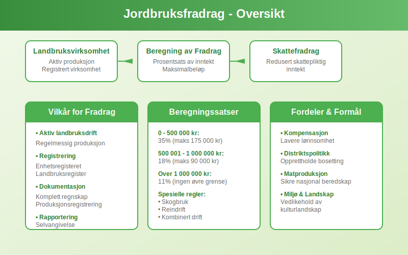
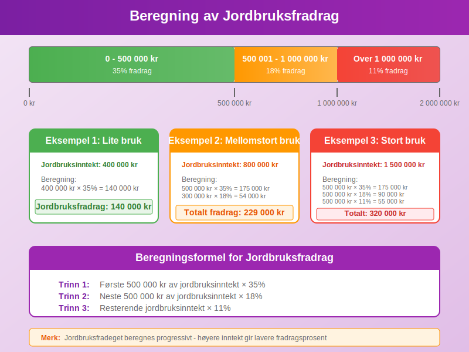
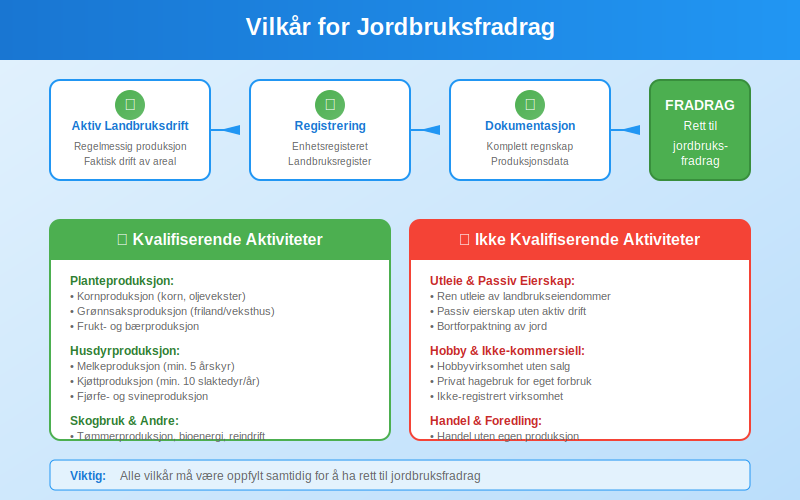
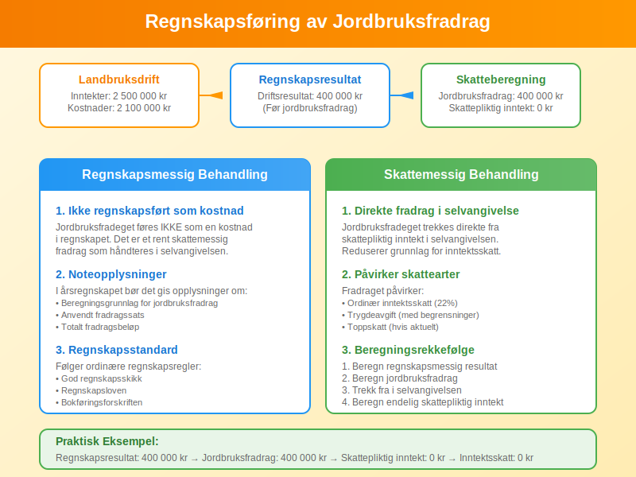
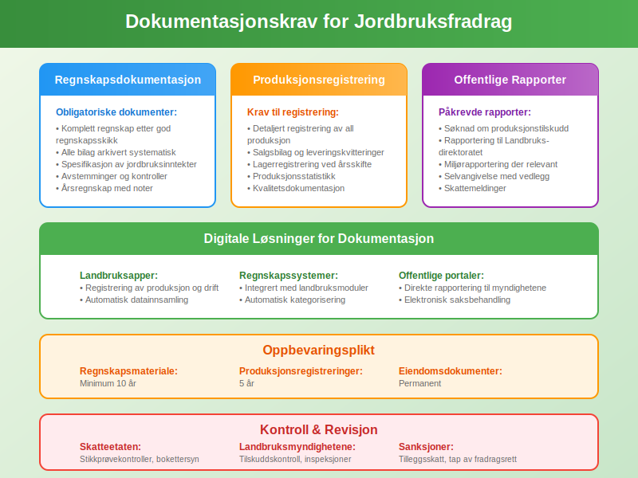

Jordbruksfradrag er spesielle skattefradrag som gis til landbruksvirksomheter i Norge for å kompensere for sektorens særegne utfordringer og bidra til opprettholdelse av landbruksaktivitet. Dette er et viktig virkemiddel i norsk landbrukspolitikk som påvirker både regnskap og skatteplanlegging for landbruksforetak.
Grunnleggende om Jordbruksfradrag
Jordbruksfradrag er regulert i skatteloven § 8-1 og representerer et særskilt fradrag som kommer i tillegg til ordinære driftskostnader. Fradraget skal kompensere for at landbruket har lavere avkastning enn andre næringer og bidra til å opprettholde bosetting og aktivitet i distriktene.

Historisk Bakgrunn
Jordbruksfradeget ble innført i 1975 som en del av den norske landbrukspolitikken. Formålet var å:
- Kompensere for lavere lønnsomhet i landbruket
- Stimulere til fortsatt landbruksaktivitet
- Opprettholde bosetting i distriktene
- Sikre matproduksjon og beredskap
Rettslig Grunnlag
Jordbruksfradeget er hjemlet i:
- Skatteloven § 8-1 - Hovedbestemmelsen om jordbruksfradrag
- Forskrift om jordbruksfradrag - Detaljerte regler og satser
- Stortingsvedtak - Årlige justeringer av fradragssatser
Beregning av Jordbruksfradrag
Jordbruksfradeget beregnes som en prosentsats av jordbruksinntekten med et maksimalt beløp per år. Beregningen følger spesifikke regler som varierer basert på inntektsnivå og type landbruksaktivitet.

Grunnleggende Beregningsformel
| Inntektsnivå | Fradragssats | Maksimalt fradrag |
|---|---|---|
| 0 - 500 000 kr | 35% | 175 000 kr |
| 500 001 - 1 000 000 kr | 18% | 90 000 kr |
| Over 1 000 000 kr | 11% | Ingen øvre grense |
Praktisk Beregningseksempel
Eksempel 1: Mindre gårdsbruk
- Jordbruksinntekt: 400 000 kr
- Fradragssats: 35%
- Beregnet fradrag: 400 000 × 35% = 140 000 kr
- Jordbruksfradrag: 140 000 kr
Eksempel 2: Mellomstort gårdsbruk
- Jordbruksinntekt: 800 000 kr
- Første 500 000 kr: 500 000 × 35% = 175 000 kr
- Neste 300 000 kr: 300 000 × 18% = 54 000 kr
- Totalt jordbruksfradrag: 229 000 kr
Spesielle Beregningsregler
For visse typer landbruksaktivitet gjelder særskilte regler:
- Skogbruk: Eget fradrag med andre satser
- Pelsdyroppdrett: Spesielle regler frem til utfasing
- Reindrift: Særskilte bestemmelser for samisk reindrift
- Kombinert drift: Forholdsmessig beregning
Vilkår for Jordbruksfradrag
For å ha rett til jordbruksfradrag må flere vilkår være oppfylt. Disse vilkårene sikrer at fradraget kun gis til aktiv landbruksvirksomhet.

Hovedvilkår
1. Aktiv Landbruksvirksomhet Virksomheten må drive aktiv landbruksproduksjon, ikke bare eie landbrukseiendommer. Dette innebærer:
- Regelmessig produksjon av landbruksprodukter
- Faktisk drift av jord- eller skogbruksareal
- Dokumentert landbruksaktivitet gjennom hele året
2. Registrering og Rapportering Virksomheten må være:
- Registrert i Enhetsregisteret som landbruksforetak
- Rapportert til landbruksmyndighetene
- Ført i landbruksregisteret
3. Inntektsgrunnlag Jordbruksinntekten må være:
- Reell inntekt fra landbruksaktivitet
- Dokumentert gjennom regnskap
- Rapportert i selvangivelsen
Eksklusjonsregler
Følgende aktiviteter gir ikke rett til jordbruksfradrag:
- Ren utleie av landbrukseiendommer
- Hobbyvirksomhet uten kommersiell karakter
- Foredling som ikke er direkte knyttet til egen produksjon
- Handel med landbruksprodukter uten egen produksjon
Typer Landbruksvirksomhet som Kvalifiserer
Jordbruksfradeget gjelder for ulike typer landbruksaktivitet, hver med sine spesifikke regler og krav.
Planteproduksjon
Kornproduksjon:
- Dyrking av korn, oljevekster og proteinvekster
- Inkluderer både mat- og fôrkorn
- Krever minimum areal og produksjon
Grønnsaksproduksjon:
- Friland- og veksthusproduksjon
- Både konvensjonell og økologisk dyrking
- Inkluderer poteter, grønnsaker og bær
Fruktproduksjon:
- Eple-, pære- og steinfrukthager
- Bærproduksjon (jordbær, bringebær, blåbær)
- Krever etablerte plantinger
Husdyrproduksjon
| Produksjonstype | Minimumskrav | Spesielle regler |
|---|---|---|
| Melkeproduksjon | 5 årskyr | Kvoteordning |
| Kjøttproduksjon | 10 slaktedyr/år | Dokumentert salg |
| Svineproduksjon | 20 slaktesvin/år | Miljøkrav |
| Fjørfeproduksjon | 500 slaktekyllinger/år | Dyrevelferdskrav |
| Sauehold | 20 vinterfôra sauer | Beitebruk |
Skogbruk
Skogbruk har egne regler for jordbruksfradrag:
- Tømmerproduksjon: Salg av tømmer fra egen skog
- Bioenergi: Produksjon av ved og flis
- Spesialprodukter: Juletreproduksjon, pyntegrønt
- Minimum hogstvolum: 50 m³ per år for fullt fradrag
Regnskapsføring av Jordbruksfradrag
Jordbruksfradeget har spesielle regler for regnskapsføring som skiller seg fra ordinære fradrag.
Landbruksvirksomheter har komplekse regnskapsbehov som krever spesialiserte kontoplaner. For en detaljert gjennomgang av regnskapsføring i landbruk, inkludert håndtering av jordbruksfradrag, se vår guide til landbrukskontoplan.

Bokføringsregler
1. Ikke Regnskapsført som Kostnad Jordbruksfradeget føres ikke som en kostnad i regnskapet, men som et skattemessig fradrag direkte i selvangivelsen.
2. Noteopplysninger I årsregnskapet bør det gis noteopplysninger om:
- Beregningsgrunnlag for jordbruksfradrag
- Anvendt fradragssats
- Totalt fradragsbeløp
3. Skatteberegning Fradraget reduserer skattepliktig inntekt og påvirker:
- Ordinær inntektsskatt
- Trygdeavgift (med begrensninger)
- Toppskatt (hvis aktuelt)
Praktisk Eksempel på Regnskapsføring
Gårdsbruk AS - Regnskapsår 2024:
Driftsinntekter jordbruk: 2 500 000 kr
Driftskostnader: 2 100 000 kr
Driftsresultat: 400 000 kr
Jordbruksfradrag (beregnet):
- Første 500 000 kr × 35% = 175 000 kr
- Neste 500 000 kr × 18% = 90 000 kr
- Neste 1 500 000 kr × 11% = 165 000 kr
Totalt jordbruksfradrag: 430 000 kr
Skattepliktig inntekt før fradrag: 400 000 kr
Jordbruksfradrag: -400 000 kr
Skattepliktig inntekt etter fradrag: 0 kr
Kombinasjon med Andre Fradrag
Jordbruksfradeget kan kombineres med andre skattefradrag, men det finnes visse begrensninger og samordningsregler.
Kompatible Fradrag
Ordinære Driftskostnader:
- Alle normale driftskostnader kan trekkes fra
- Avskrivninger på landbruksmaskiner og bygninger
- Rentekostnader på landbrukslån
Investeringsfradrag:
- Kan kombineres med jordbruksfradrag
- Gjelder investeringer i landbruksutstyr
- Har egne regler og satser
Begrensninger og Samordning
| Fradragstype | Samordning med jordbruksfradrag | Begrensninger |
|---|---|---|
| Underskudd | Kan fremføres til senere år | Ikke mot jordbruksfradrag |
| Minstefradrag | Ikke aktuelt for næringsdrivende | - |
| Personfradrag | Fullt fradrag | Ingen begrensning |
Særlige Regler for Ulike Selskapsformer
Reglene for jordbruksfradrag varierer avhengig av hvilken selskapsform landbruksvirksomheten drives i.

Enkeltpersonforetak
I enkeltpersonforetak gjelder standardreglene for jordbruksfradrag:
- Fullt fradrag etter ordinære satser
- Direkte fradrag i personinntekt
- Kan kombineres med andre personfradrag
Aksjeselskap
For landbruk drevet i aksjeselskap gjelder spesielle regler:
- Selskapets fradrag: Jordbruksfradeget tilkommer selskapet
- Ikke utbytte: Fradraget påvirker ikke utbyttegrunnlaget
- Fremførbare underskudd: Kan påvirke fremføring av underskudd
Ansvarlige Selskap
I ansvarlige selskap fordeles jordbruksfradeget:
- Etter eierandel: Hver deltaker får sin andel
- Personlig fradrag: Føres i hver deltakers selvangivelse
- Samlet beregning: Fradraget beregnes på selskapsnivå
Særlige Regler for Samdrift
Samdrifter har egne regler:
- Fradrag beregnes for samdriften som helhet
- Fordeles mellom deltakerne etter avtalt nøkkel
- Krever særskilt dokumentasjon og rapportering
Dokumentasjon og Rapportering
Korrekt dokumentasjon er avgjørende for å kunne kreve jordbruksfradrag. Landbruksvirksomheter må opprettholde omfattende dokumentasjon.

Obligatorisk Dokumentasjon
1. Produksjonsregistrering
- Detaljert registrering av all produksjon
- Salgsbilag og leveringskvitteringer
- Lagerregistrering ved årsskifte
2. Regnskapsdokumentasjon
- Komplett regnskap ført etter god regnskapsskikk
- Alle bilag arkivert systematisk
- Spesifikasjon av jordbruksinntekter
3. Offentlige Rapporter
- Søknad om produksjonstilskudd
- Rapportering til Landbruksdirektoratet
- Miljørapportering der relevant
Digitale Løsninger
Moderne landbruksvirksomheter bruker digitale verktøy for dokumentasjon:
- Landbruksapper: For registrering av produksjon og drift
- Regnskapssystemer: Integrert med landbruksmoduler
- Offentlige portaler: Direkte rapportering til myndighetene
Oppbevaringsplikt
Dokumentasjon må oppbevares i:
- Minimum 10 år for regnskapsmateriale
- 5 år for produksjonsregistreringer
- Permanent for eiendomsdokumenter
Endringer og Utviklingstrekk
Jordbruksfradeget har gjennomgått flere endringer de siste årene, og det er viktig å holde seg oppdatert på utviklingen.
Historiske Endringer
| År | Endring | Konsekvens |
|---|---|---|
| 2019 | Økte fradragssatser | Høyere fradrag for små bruk |
| 2021 | Nye beregningsregler | Forenklet administrasjon |
| 2023 | Digitale rapporteringskrav | Økt effektivitet |
| 2024 | Justerte inntektsgrenser | Bedre målretting |
Fremtidige Utviklingstrekk
Digitalisering:
- Økt bruk av automatisert rapportering
- Integrasjon med ERP-systemer
- Sanntidsdata fra landbruksmaskiner
Miljøfokus:
- Krav til bærekraftig produksjon
- Karbonavtrykk-rapportering
- Økologisk produksjon prioriteres
EU-tilpasning:
- Harmonisering med EU-regler
- WTO-kompatibilitet
- Internasjonale handelsavtaler
Kontroll og Sanksjoner
Skatteetaten og landbruksmyndighetene fører kontroll med jordbruksfradeget for å sikre korrekt anvendelse.
Kontrollaktiviteter
Skatteetaten:
- Stikkprøvekontroller av selvangivelser
- Bokettersyn hos landbruksforetak
- Kryssjekk mot offentlige registre
Landbruksmyndighetene:
- Kontroll av produksjonstilskudd
- Stedlige inspeksjoner
- Dokumentasjonskontroll
Vanlige Feil og Sanksjoner
Typiske Feil:
- Feil beregning av fradragsgrunnlag
- Manglende dokumentasjon
- Rapportering av ikke-kvalifiserende aktivitet
- Dobbeltrapportering av inntekter
Sanksjoner:
- Tilleggsskatt på 20% av feilaktig fradrag
- Renter på etterbetalt skatt
- Gebyr for manglende rapportering
- Tap av fremtidige fradragsrettigheter
Internasjonale Sammenligninger
Jordbruksfradeget i Norge kan sammenlignes med tilsvarende ordninger i andre land.
Nordiske Land
| Land | Fradragsordning | Maksimalt fradrag |
|---|---|---|
| Norge | Jordbruksfradrag | Varierer etter inntekt |
| Sverige | Skogsfradrag | 50% av skoginntekt |
| Danmark | Landbruksfradrag | 15% av inntekt |
| Finland | Metsävähennys | 60% av skoginntekt |
EU-Land
Mange EU-land har tilsvarende støtteordninger:
- Frankrike: Déduction forfaitaire agricole
- Tyskland: Landwirtschaftliche Pauschbeträge
- Nederland: Landbouwvrijstelling
Praktiske Tips og Råd
For å optimalisere jordbruksfradeget og sikre korrekt håndtering, bør landbruksforetak følge disse rådene:
Planlegging og Optimalisering
1. Inntektsplanlegging
- Planlegg salg for optimal fradragsutnyttelse
- Vurder tidspunkt for større investeringer
- Koordiner med andre fradragsmuligheter
2. Dokumentasjon
- Etabler gode rutiner for dokumentasjon
- Bruk digitale verktøy for effektiv registrering
- Gjennomfør regelmessige kontroller
3. Kompetanse
- Hold deg oppdatert på regelverksendringer
- Delta på kurs og informasjonsmøter
- Bruk faglig rådgivning ved behov
Vanlige Fallgruver
- Undervurdere dokumentasjonskrav
- Blande privat og næring
- Glemme rapporteringsfrister
- Feilaktig beregning av fradragsgrunnlag
Fremtiden for Jordbruksfradrag
Jordbruksfradeget vil sannsynligvis gjennomgå ytterligere endringer i årene som kommer, påvirket av både nasjonale og internasjonale faktorer.
Politiske Signaler
Regjeringen har signalisert at jordbruksfradeget vil:
- Opprettholdes som viktig virkemiddel
- Moderniseres gjennom digitalisering
- Målrettes bedre mot aktive produsenter
- Tilpasses miljø- og klimakrav
Teknologisk Utvikling
Ny teknologi vil påvirke administrasjonen:
- Automatisk datainnsamling fra landbruksmaskiner
- AI-basert kontroll og validering
- Blockchain for sporbarhet
- IoT-sensorer for produksjonsdata
Ektefellefordeling
For informasjon om hvordan ektefeller kan fordele fradrag og inntekter i landbruksvirksomhet, se vår artikkel om Ektefellefordeling.
Relaterte Artikler
Konklusjon
Jordbruksfradrag er et viktig økonomisk virkemiddel som bidrar til å opprettholde landbruksaktivitet i Norge. For å utnytte fradraget optimalt kreves grundig kunnskap om regelverket, systematisk dokumentasjon og korrekt regnskapsføring.
Landbruksforetak bør etablere gode rutiner for håndtering av jordbruksfradeget, holde seg oppdatert på regelverksendringer og søke faglig rådgivning ved behov. Med riktig tilnærming kan jordbruksfradeget bidra betydelig til å forbedre lønnsomheten i landbruksvirksomheten.
Den fortsatte digitaliseringen av landbrukssektoren vil gjøre administrasjonen av jordbruksfradeget mer effektiv, samtidig som det stiller nye krav til kompetanse og systemløsninger. Fremtidens landbruksforetak må være forberedt på å tilpasse seg disse endringene for å kunne utnytte alle tilgjengelige fordeler.